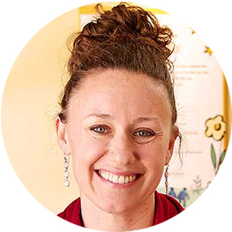
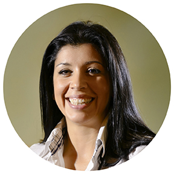

<html lang="en-us">
  <head>
    <meta charset="utf-8">
    <meta http-equiv="X-UA-Compatible" content="IE=edge">
    <meta name="viewport" content="width=device-width, initial-scale=1">
    <title>Creative Kidz Team</title>
    <meta name="description" content="Page Description Goes Here">
  </head>
  <body>
      <link href="styles.css" rel="stylesheet" type="text/css" media="screen" /> <!-- Add your stylesheet here, before the closing HTML tag -->
  </body>
</html>
<header>
  
  <h3>Creative Kids Kinder Care Center</h3>
</header>
<div class="nav">
  <ul>
  <li><a href="index.html">Home</a></li>
<li><a href="#">News</a></li>
<li><a href="#">For Parents</a></li>
  <li><a href="programs.html">Programs By Level</a></li>
  <li><a href="ourteam.html">Our Team</a></li>
</ul>
</div>
  
<div class="teamintro">
  <h2>Our Leadership Team</h2>
  <p>Creative Kidz is very mindful of the significant role that teachers play in our children’s education and are very proud to have created a high quality team. Each teacher is selected for their unlimited love for children, professionalism, commitment to provide quality care and education. Our teachers have an average of over 10 years of experience. They are being led by 2 full time directors, each with over 20 years of experience. All of our teachers meet and exceed DCFS requirements.
  </p>
  <a href="#">Join Our Team</a>
</div>
<div class="teammembers">
  
  <h3>Brittany Robertson</h3>
  <h4>Chief Operations Officer</h4>
  <p>Brittany is Creative Kidz Chief Operations Officer. She began her career in 2007 as a pre-K Teacher. She left to obtain her Bachelor’s degree in Early Childhood Education at Oregon State University. Brittany quickly showed her strengths as a leader and was promoted to the Regional Director. Brittany has grown in her career and is now the Chief Operating Officer. She maintains support to each school’s Site Director, Area Directors, teachers, children and families, ensuring a quality consistent program. Brittany is proud to work for us because of its reputable academic program, collaborative work environment, and commitment to families. Brittany’s teaching philosophy is to build personal relationships with each child and encourage independence in their learning.Brittany has a passion for the development of children, education, and community relationships.
</p>
<blockquote>”I love coming to work! This community is so special to me, as if it were my second family!”</blockquote>

<h3>Megan Drake</h3>
<h4>Area Director</h4>
<p>Megan is the Area Director for our learning facilities. She began her career with us in 2011. She has her Masters in the Art of Teaching, as well as Bachelor’s Degree in Human Development and Family Sciences. She has worked with a variety of ages, from infants to sixth grade.
</p>
<blockquote>“I learn something new from the children each day! I love the supporting and welcoming environment that Creative Kidz creates for its kids, families, and staff!”</blockquote>

<h3>Kathy Clemson</h3>
<h4>Toddler Activity Director</h4>
<p>Teacher Kathy is the Co-Teacher for the teaching center. She started as a floater/substitute in February of 2012, and is very excited to now be able to dedicate herself to the Jr. Toddler class full time! She has a Bachelor’s degree in Music Education from University of Akron and continuing education in Early Childhood. She has worked with kids of all ages since she was one herself.  She finds herself laughing a lot when she's with them. She loves to see them learn and grow as they discover and experience the world around them.
</p>
<blockquote>"I love working with children because they’re so honest, fun-loving and do and say the most outrageous things!""</blockquote>

<h3>Kaleigh Stewart</h3>
<h4>Infant Activity Director</h4>
<p>Teacher Kaleigh is infant aide. She moved to Ohio from Southern California and is loving it. Kaleigh started working in preschools and day cares when she was in high school and decided to major in Early Childhood Education later in college. Kaleigh is very excited to be apart of this team and help these little ones grow!
</p>
<blockquote>"Helping children grow is a passion of mine!"</blockquote>
</div>
<footer>
  <ul>
  <li>Create Kidz Kinder Care Center</li>
  <li>134 Portage Rd.
  Kent, OH 44240</li>
  <li>Phone: 330-672- 3000 Fax: 330-672- 3001</li>
  <li>Email: contact@creativekidz.com
  <link href="styles.css" rel="stylesheet" type="text/css" media="screen"/> <!-- Add your stylesheet here, before the closing HTML tag -->
</body></li>
</footer>
</html>
